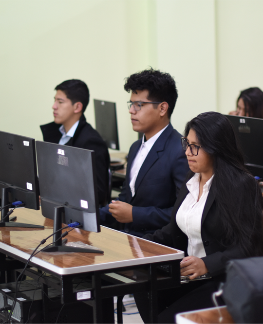

La carrera de Sistemas Informáticos o Ingeniería en Sistemas Computacionales se enfoca en formar profesionales capaces de diseñar, desarrollar, implementar y gestionar soluciones tecnológicas basadas en informática y computación. Su objetivo principal es aplicar los conocimientos en programación, análisis de datos, redes, bases de datos y gestión de proyectos tecnológicos para resolver problemas en diversos sectores. Los egresados de esta carrera suelen tener una sólida formación en la creación y mantenimiento de sistemas informáticos, que incluyen tanto el hardware como el software, y en la aplicación de estos sistemas en distintas áreas.
El Técnico Superior en Sistemas Informáticos, brinda servicios profesionales en todo campo de manejo y tratamiento de la información. Crea sistemas informáticos para instituciones públicas y privadas, de acuerdo a las exigencias de los usuarios. - Ensambla equipos de computación. - Realiza mantenimiento preventivo y correctivo de hardware. - Instala, configura y opera software. - Desarrolla programas de sistemas de información. - Crea programas de videojuegos. - Gestiona y administra base de datos. - Instala, configura y administra redes físicas y virtuales. - Brinda soporte informático y de redes. - Diseña y crea aplicaciones para dispositivos móviles.
TITULO Técnico Superior en Sistemas Informáticos.P
DURACIÓN Tres periodos académicos
HORARIOS Turno Tarde: lunes a viernes: 14:00 a : 18:00 Turno Nocturno: lunes a viernes: 18:30 a 22:10